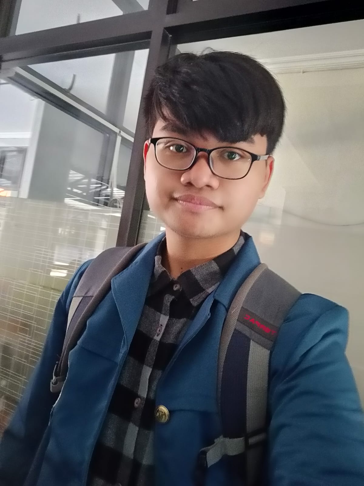

Tentang Tantas Bacengdok
Tantas Bacengdok
merupakan proyek kelompok 3 PDB 59 Universitas Airlangga yang berfokus pada pengolahan limbah tumbuhan eceng gondok liar dengan memprosesnya menjadi kertas berkualitas.
Proyek dengan tema lingkungan ini memiliki tujuan mengatasi masalah
eutrofikasi akibat tingkat kesuburan air yang abnormal sehingga memicu timbulnya ledakan
eceng gondok.
Anggota kelompok
Hanif Isya Annafi
S1 Sistem Informasi
"Jika bisa nanti kenapa harus sekarang"
Halo semuanya! kenalin aku Hanif yang bikin web ini 😎, kalau ada kendala sama webnya langsung kontak aku ya!!

Aurora Najwa Hidaya Arlin
prodi kalian
"quotes kalian"
deskripsi diri(bebas)
Erin L.F. Rahmanto
prodi kalian
"quotes kalian"
deskripsi diri(bebas)
Nur Afifah
prodi kalian
"quotes kalian"
deskripsi diri(bebas)
Nurul Abidah
prodi kalian
"quotes kalian"
deskripsi diri(bebas)
Rosita Nurul Khomariyah
prodi kalian
"quotes kalian"
deskripsi diri(bebas)
Zahra Nurrokhimatus Sholikah
prodi kalian
"quotes kalian"
deskripsi diri(bebas)